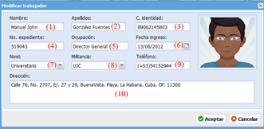

Ayuda en línea
Future Framework
Trabajadores
Versión 1.0.0
Trabajadores
Ruta de acceso: Capital humano/Trabajadores
Descripción de la funcionalidad
La funcionalidad “Trabajadores” es la encargada de gestionar los trabajadores por entidad que se utilizarán en el Sistema Cuadro de Mando Integral Perdurit.
Gestionar entidades.
1. Adicionar trabajador, muestra una ventana para rellenar los datos del nuevo trabajador.
2. Modificar trabajador, muestra una ventana para modificar los datos del trabajador seleccionado en la lista (8).
3. Eliminar trabajador, elimina los datos del trabajador seleccionado en la lista (8).
4. Dar baja al trabajador, se realiza la baja del trabajador seleccionado en la lista (8).
5. Ver bajas anteriores, se muestra una ventana con el listado de los trabajadores que han sido bajas.
6. Imprimir, muestra la ventana de configuración de impresión para los datos de los trabajadores en la lista (8).
7. Buscador, busca coincidencias del texto suministrado con los trabajadores de la lista (8).
8. Listado de trabajadores, muestra el listado de los trabajadores configurados en el sistema.
Adicionar trabajador
Adicionar trabajador.
1. Nombre, se debe introducir el nombre del nuevo trabajador.
2. Apellidos, se debe introducir los apellidos del nuevo trabajador.
3. C. identidad, se debe introducir el número del carnet de identidad del nuevo trabajador.
4. No. expediente, se debe introducir el número del expediente correspondiente al nuevo trabajador.
5. Ocupación, se debe introducir la ocupación laboral que ocupa el nuevo trabajador.
6. Fecha ingreso, se debe seleccionar la fecha de ingreso a la entidad del nuevo trabajador.
7. Nivel, se debe seleccionar el nivel escolar correspondiente del nuevo trabajador.
8. Militancia, se debe seleccionar el tipo de militancia correspondiente del nuevo trabajador.
9. Teléfono(s), se debe(n) escribir el (los) teléfono(s) para los datos de contacto del nuevo trabajador.
10. Dirección, se debe escribir la dirección de ubicación del nuevo trabajador.
Cuando se hayan rellenado los campos se debe presionar el botón Aceptar para guardar los cambios y cerrar la ventana o el botón Cancelar para cerrar la ventana sin guardar los cambios.
Modificar trabajador
Primero, se debe seleccionar de la lista (8) el trabajador que se desea modificar.

Modificar trabajador.
1. Nombre, se debe introducir el nombre del trabajador seleccionado que se desea modificar.
2. Apellidos, se debe introducir los apellidos del trabajador seleccionado que se desea modificar.
3. C. identidad, se debe introducir el número del carnet de identidad del trabajador seleccionado que se desea modificar.
4. No. expediente, se debe introducir el número del expediente al trabajador seleccionado que se desea modificar.
5. Ocupación, se debe introducir la ocupación laboral que ocupa el trabajador seleccionado que se desea modificar.
6. Fecha ingreso, se debe seleccionar la fecha de ingreso a la entidad del trabajador seleccionado que se desea modificar.
7. Nivel, se debe seleccionar el nivel escolar correspondiente del trabajador seleccionado que se desea modificar.
8. Militancia, se debe seleccionar el tipo de militancia correspondiente del trabajador seleccionado que se desea modificar.
9. Teléfono(s), se debe(n) escribir el (los) teléfono(s) para los datos de contacto del trabajador seleccionado que se desea modificar.
10. Dirección, se debe escribir la dirección de ubicación del trabajador seleccionado que se desea modificar.
Cuando se hayan realizado los cambios se debe presionar el botón Aceptar para guardar los cambios o el botón Cancelar para cerrar la ventana sin guardar los cambios.
Eliminar trabajador
Primero, se debe seleccionar de la lista (8) el trabajador que se desea eliminar. Si el trabajador está siendo usado o tiene datos asociados a él no se podrá eliminar.
Eliminar trabajador.
Si presiona el botón Aceptar el sistema verificará si puede realizar la acción y procederá a eliminar el trabajador seleccionado, en caso de presionar el botón Cancelar, se cerrará la ventana y no se realizará ninguna acción.
Dar baja al trabajador
Primero, se debe seleccionar de la lista (8) el trabajador que se desea dar baja. Si el trabajador está siendo usado o tiene datos asociados a él no se podrá dar baja.
Confirmar baja al trabajador seleccionad.
Si presiona el botón Aceptar el sistema verificará si puede realizar la acción y mostrará la ventana “Baja trabajador”, en caso de presionar el botón Cancelar, se cerrará la ventana y no se realizará ninguna acción.
Datos baja del trabajador
Si presiona el botón Aceptar el sistema verificará si puede realizar la acción y procederá a dar baja al trabajador seleccionado, en caso de presionar el botón Cancelar, se cerrará la ventana y no se realizará ninguna acción.
Ver bajas anteriores
Al presionar el botón Ver bajas anteriores se muestra la ventana “Trabajadores que causaron baja”, donde muestran todos aquellos trabajadores que han causado baja en la entidad.
Eliminar trabajador.
Si presiona el botón Cerrar se cerrará la ventana.
Imprimir trabajadores
Configurar reporte de trabajadores
Si presiona el botón Aceptar el sistema mostrará los datos los trabajadores en el formato seleccionado, en caso de presionar el botón Cancelar, se cerrará la ventana y no se realizará ninguna acción.